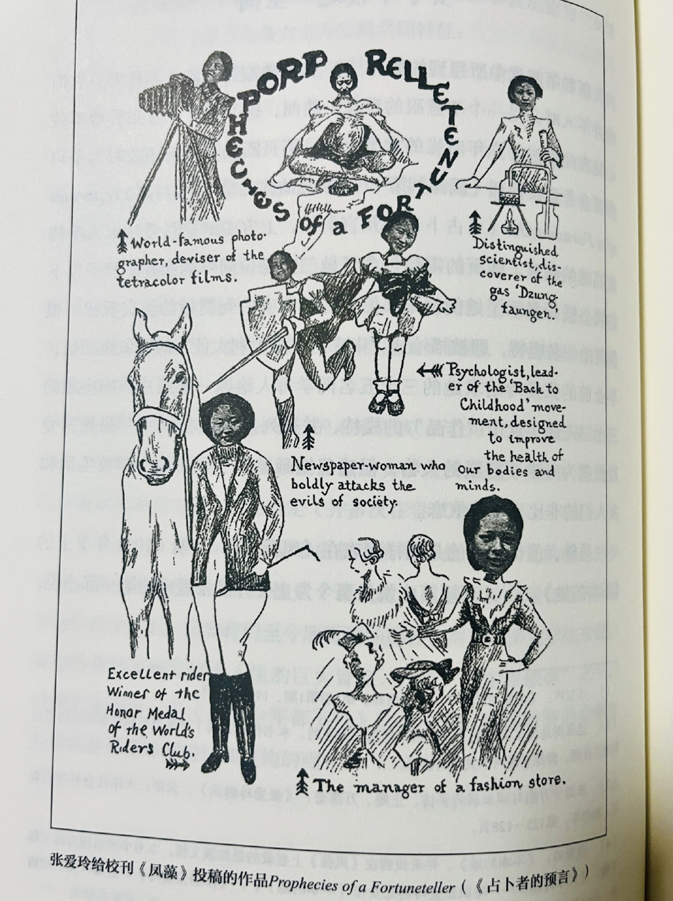

Thank you all!
A person's spirit can be violated.
I'm truly furious. Thank you, xxx, for giving me a place to speak out.
I find it truly disgusting, especially when some men casually toss off flippant remarks, treating my anger like a joke.
I heard xxx say that when WT asked if "fucking" counts as a misogynistic slur, the guy in the back stood up and argued that the idea "so-called extreme feminism can raise public awareness of women's rights" is wrong. That guy was still muttering, "How could this possibly be considered..."
Fine. Fuck him. Fuck his dad. Fuck your dad. Fuck your granddad.
Don't let me find out who you are👆
And that guy who slandered Korean women's rights groups killing little boys "extreme feminism"? Go stand in front of an abandoned baby tower and say that to the girls who died because of son preference.
If you can say it well, I'll give you two points.
Who the hell is this guy? Easy for you to talk when you're not the one suffering.
Fuck off, you little whiner.
Not from the news, probably from Guangdian. Not sure if it's an external or internal hire.
Has anyone posted this on Xiaohongshu? My view there's pretty solid! I could say something too🥹
Seriously, weak male comrades. Didn't the teacher laugh when he said that?
Drop a comment here!
Talking about rationality without addressing systemic oppression is bullshit. Who cares about women's real human rights struggles if you just boil the frog slowly? Fengxian chain incident, the Tangshan massacre — which of these cases wasn't pushed to the forefront of public discourse through so-called emotional tactics before it could be resolved? We poured so much anger into maskpark using so many "extreme" methods, but was the issue ultimately resolved?Demanding everyone maintain rationality from on high, singling out "anger" as the only viable method to spark discussion — isn't this high-handed approach itself a form of bullying against victims? Criticizing the victims is itself a form of bullying.
If calm narration could be heard, who would choose to scream without consideration?
We must try. We must speak up.
After today's class, I kept wondering: what exactly gave him the audacity to spew such twisted values in front of over 200 students? Support from some so-called "male alliance"? He treated our anger with the condescending "charity" of a superior.
Does his authority as a teacher really grant him the right to act this way? (Facepalm)
The world needs more female creators...
If anyone has the link to that news story about the murdered little boy, could you post it here? I couldn't find it at all — seems fake... I kept wondering about its authenticity too... No proof...
Same here. I'm really done with this. Get lost, you stinking man.
Hello everyone, I'm one of the original posters. Thank you to the women who spoke up earlier—your words inspired me to stand up too.The female infants buried in the abandoned baby tower, the wives killed by domestic violence—yet we can't use our own voices to refute "extreme male chauvinism." And these privileged beneficiaries, speaking from a position of comfort, dare to loudly discuss extreme feminism here? Our polite, gradual demands are ignored, while radical cries are mocked and vilified. Does this mean we'll forever be denied our rightful rights? I've been sexually harassed by men groping my chest and private parts, threatened and harassed by drunken men on the street.and in high school, boys in my class called us "stupid girls."
But why did I top my class on the college entrance exam? Because they weren't even "stupid" enough to match? My worth was once defined by male relatives solely through "marriage." This is the oppression we face under extreme patriarchy.
For millennia we've been trampled and oppressed. All we ask is for you to lift your feet off our heads. Before women's rights, I am a human being. We are human beings. What we demand is human rights! Fuck you! Fuck your extreme patriarchy! Shut the fuck up!
Can't you feel our rage? How is this classroom not patriarchal bullying? Do those female students who stood up to speak their minds? Do you think this makes you feel powerful? Constantly threatening us with surveillance, the dean's office, and dropping the class—is that your so-called right or just a threat? Get lost, you stinking male chauvinist.
Actually, I was genuinely looking forward to learning something about this topic. But somehow the classroom turned into a trial for women.And then you say you're using this topic to "test" us? Why put on that air of having everything under control? Are you really that clever, or are you just scared? The days of meekly obeying as students are over—no one's going to indulge you anymore.
Go! Go! Go! Go! Go! Go!
Yes,we don't need your extra credit at all!!!! What the hell are you pretending?!?!? Support support
He gives me such a contradictory vibe... I thought someone bringing up the sensitive topic of extreme feminism would be someone who really understands the field... But not only does he constantly bring up his mother as a mouthpiece for his obsessions, he also locks female students out during their periods and demands they "guard the door" for him, makes them stand as punishment... Isn't this incredibly disrespectful to women? I mean, how could he step so badly on these landmines? Plus, when some students stood up to voice their opinions earlier, he'd interrupt them by turning up the microphone volume... It' s a vivid, ironic illustration of power dynamics.Furthermore, does piling on case studies and having students debate in class actually achieve the course objective of understanding international communication? It feels like he not only failed to act as an impartial judge but actively stirred the pot.I'd like to add one more point. He kept repeating, " I have my xxx rights, and you have your xxx rights," which sounded fair enough. But the power structure between teacher and student is inherently unequalyou cant measure these things on the same scale. Isn't the whole reason teacher student relationships are prohibited because the power inherent in the teacher's profession canoppress students?
Thank you. You're going to be an amazing journalist❤️
Thank you. I see it now. We'll all become better versions of ourselves❤️
How can we get him out of this classroom? How can we make people like him shut up?
Girls, you are all absolutely incredible. May lightning strike him down.
Every girl who stood up—and every girl who didn't—is amazing😿
You're amazing🥹🥹🥹
You're all amazing.
What kind of teacher would spend an entire class linking "extremism" with "women's rights"—especially when it's a term with no academic definition? Is this a classroom, or some kind of brainwashing session😅
Girls, you're so brave. This class was the most painful yet the most liberating. We'll keep speaking out—we've long been sick of this rhetoric.
I've experienced sexual harassment. I despise everyone who pontificates from a position of privilege without having gone through it. I despise everyone who dismisses my pain with trivializing remarks.
Yes, I've been through it too. I doubt any girl would joke about this. Speaking up takes immense resolve and courage—especially when the perpetrator is your own teacher, someone who holds your academic future in their hands.
You are incredibly impressive!! It's heartening to hear so many brave voices.
"The two hardest things in the world are understanding others and changing others."
Before discussing "radical feminism," we must first clarify a fundamental question: Does this concept exist academically? The concept used in scholarly research is Radical Feminism, which focuses on the structural roots of gender oppression. The term "radical" here is not pejorative; it refers to tracing the origins of gender inequality back to institutional, cultural, and even familial structures, aiming to understand and resolve its deep-seated issues. Radical Feminism emphasizes systemic reform, such as dismantling patriarchal inequalities, reforming gender discrimination in workplaces and educational systems, and challenging entrenched gender stereotypes. These represent theoretical and practical research and actions, not attacks on or hatred toward individual men.
However, in online and public discourse, the term "extreme feminism" rarely appears in academic works or authoritative research. It is more often used as a labeling rhetoric to describe any radical, fiercely worded, or even merely non-traditional feminist discourse. Such usage often disregards scholarly distinctions between different feminist schools of thought, conflating radical feminism, libertarian feminism, and equality feminism into a single, uniformly pejorative category. In this context, "extreme feminism" functions as a tool of public discourse to generate fear, opposition, or demonization of feminist groups.
Logically speaking, if a concept lacks formal academic definition and empirical research support yet circulates widely online and in media with negative connotations, it essentially functions as a label or rhetorical tool rather than an independent sociological or political concept. In other words, so-called "extreme feminism" is not an academic subject worthy of serious discussion, but rather a product of exaggeration, emotionalization, and misinterpretation within the public discourse.
Furthermore, labeling "radical feminism" as "extreme feminism" itself reflects societal cognitive biases toward the feminist movement. This bias not only distorts academic concepts but also risks trapping public discourse in emotional polarization, obscuring the real issues of gender inequality.
The critique of patriarchal structures by radical feminism is fundamentally aimed at resolving social inequality, not inciting hatred toward men. However, once labeled as "extreme," its academic value and social legitimacy risk being overlooked by the public. The focus of discussion then shifts toward emotional controversies rather than systemic issues.
A common challenge in many sexual harassment cases is a lack of recognition of what constitutes harassment. Traditionally, investigative bodies have defined sexual harassment based on direct physical violence. Yet the campus sexual harassment these women experienced is characterized more by power control, psychological manipulation, and mental coercion. Judicial practice has yet to universally recognize this nuanced understanding, and such cognitive gaps inevitably influence judgments about a case's nature and practical handling.
No progress has been made in institutional or ethical discourse. Schools and the state merely react passively: expelling those who make a big fuss, while covering up unreported cases. Most critically, corresponding demands and responses quickly merge with the political discipline of teachers, becoming overly moralistic. They fail to distinguish between extramarital situations unrelated to professional ethics and those targeting students. Thus, such incidents will continue to recur.
Empty conjecture can bear any dreamscape, while concrete answers confine real suffering—this holds equally true for feminism. Li Xiaojang, a feminist who refuses to be confined by the "ism" of feminism, liberates women from the overarching dimensions of class, nation, and ethnicity, returning to the authentic feelings of the individual and reestablishing women's subjectivity.
The progress of any historical era can always be measured by the degree of women's freedom, for it is in the relationship between women and men, femininity and masculinity, that the triumph of humanity over animal instinct is most vividly manifested. The extent of women's liberation serves as the natural yardstick for gauging universal emancipation.
Having endured the painful experiences of the Cultural Revolution, Li Xiaojang remained perpetually wary of mainstream discourses cloaked in "-isms." "All cognition is dictated; people merely parrot others' words. Beneath grand narratives, individuals may seem insignificant and powerless, yet they are not utterly helpless or without escape—at any time, reading remains a shortcut to opening a window to the heavens. Moreover, honestly confronting oneself is essential; authentic life experiences form an instinctive defense line for discerning good from evil."
Regarding feminism becoming a form of "political correctness" today, she expresses concern that absolute faith in feminism represents a form of shortsightedness and incompleteness. "Feminism is merely one perspective, not the entirety of perspectives."
The battle against rigid ideologies unfolds as a contest between disappointment and hope. While we may anticipate a future of fairness, disappointment manifests in myriad forms. Yet whether hope rises or shatters, every feminist thinker has engaged to the utmost with the immediate premises or assumptions offered by her era.
Feminism isn't about female fists; it's about equality. It requires us to lay down our empty weapons, sheathe our sharp barbs, sit face-to-face, meet each other's gaze, and slowly sip the tea called "understanding." I want to be happier, and I respect your experiences, striving to comprehend the world through your eyes.
I'm curious about the society you see and the person you perceive me to be. Let's have a proper conversation.
And yes, I am a feminist.
So what?!
And yes, I am a feminist. So what?!
I'm a feminist, so what!!!!!
I'm a feminist, so what!!!!!
I'm a feminist, so what?!?!
I'm a feminist, so what!
I'm a feminist, so what!!!
I'm a feminist, so what!!!
I'm a feminist, so what!!!
I'm a feminist, so what!!!
I'm a feminist, so what!!!
Patience is not a virtue.
Treating endurance as a virtue is how this hypocritical world maintains its twisted order. Resistance is the virtue.
Yes, I am a feminist. I think men discussing so-called "extreme feminism" is itself an expression of gender narrative hegemony.
Checked: Men aren't allowed to discuss women's rights (if they see this, they'll start whining about how we're extreme feminists).
When women in many places still don't have the right to sit at the table and eat, could certain men, as beneficiaries of the status quo, please stop smacking their lips?
I love all of you🥹
Truth is, I'm still pretty cowardly😭 I have so much passion and so much to say, but I haven't dared to speak up... Thank you to all of you brave souls who do speak up... Where can I report this? Can someone like this really be a teacher⬇️ Me too! Me too!
I want to ask too... I'm willing to sign a petition. I'm willing to put my name and fingerprint on it. Me too! It's a pretty important required course. Don't let it become the 80s of the powerful, okay?
I love all of you too.
I can't do it. I'm so frustrated. I feel like I didn't get to express myself properly. If I had another chance, I'd yell at him until his own dad wouldn't recognize him. Fuck you.
Say goodbye to his son. Having a kid makes all the difference. It's great we can still get angry.
Because I'm afraid standing up will make me cry, so I dare not stand up. Because I know tears at this moment will be seen as emotional outbursts, but tears are clearly a weapon too...
Thanks to all the girls.
xxx, I like you; xxx, I like you; xxx, I like you; xxx, I like you. Baby with the clapping hands, I like you. Baby with the anger in your heart, I like you. Baby who speaks up, I like you. Baby who doesn't speak or clap, it's okay—I like you too.
xxx, I love you too, baby!!!!!!!!!!
Thanks, I saw it. You can come back to the dorm and tell me. Wait, it's actually our dorm?!
What, can't you see the names?! I like you too~
Funny story—couldn't find his black material at night. Creepy when you think about it😃
I tried searching too but couldn't see it either😇😇
Year 2024 Little freshman: I really want to repost this...
Of course you can share it! (The original poster isn't afraid of getting called in for questioning.)
To my year 2024 juniors, even if I don't know exactly what happened, I want to remember every word you said. We stand together. (Your WeChat moments and this document had me crying the whole time🥲)
I'm the one who posted the notice next door. You guys are truly amazing🥹
This is our life—we should be the ones setting the rules! She's sick of it!!!
Gather your courage, raise your weapons...
Oh my god, this document makes me want to cry... Girls, we are so powerful.
People who've never experienced being secretly filmed have no right to talk about it. Where were you speaking up when we were dressed normally yet got inexplicably filmed by men? Is it normal for women to be secretly filmed and not worth discussing? But if a man gets secretly filmed, is it just him getting bullied by women?
If you think women speaking out like this is "extreme feminism," then can I also say your talking like this is "extreme male chauvinism"? The root of this issue isn't about gender—it's about what's normal and what's not. There are only normal people and abnormal people.
All the girls who stood up to fight back against him are truly admirable. You're incredibly brave. Honestly, it makes me want to cry. (Reply: Not just fighting him, but also fighting all the men who speak without understanding the pain👍)
I don't understand how "International Communication" could be linked to extreme feminism. Using your authority to make life as difficult as possible for students—making those with even the slightest menstrual delay stand in the doorway as punishment, treating them like some kind of fetish to be discussed, forcing male and female students to debate gender roles... Using the microphone to cut off students' questioning, spouting these seemingly public yet fundamentally male-centric arguments. Everyone feels your class makes people physically uncomfortable—does this lesson even have any meaning? Is someone like this fit to be a university teacher?
It reminds me of when I was in elementary school and a boy in my class asked me how my "development" was going. It's been nearly ten years, and I still haven't forgotten it🤢. Thinking about it makes me... Hugs to you, baby. Another time, I encountered a voyeurism incident on the subway. The girl asked the old man across from her to delete the photos, but the old man just laughed it off, saying, "What's wrong with taking a couple of pictures of someone prett😁👆" Another time, someone was secretly taking photos of a group of us girls. When we told him to delete them, he just hopped on his bike and sped away. There are so many shameless men out there, and they even cover for each other. (Now that I'm older, if something like that happened again, I'd kill him.)
(In eighth grade, I was also groped by a male classmate. I didn't understand anything back then. Thinking about it now, I feel nothing but rage and sorrow, and powerless. Can we have strength? Can we have strength?!)
—Hug to the classmate above: Hugs to you, to us. We won't lose anything because of their vile actions. We remain strong and pure-hearted, while their souls will forever stink. May our anger be powerful, pointing outward, never harming ourselves. Hugs to the baby above.
I also recall elementary school when yearbooks were popular. A boy in my class wrote: "May your face grow bigger and thicker." I still remember every single word clearly. Back then I was young and naive, unaware of life's complexities. Only later, as I grew up, did I realize I should have felt anger.
Teacher, do you have male students in your class? Clicked it. I can't go on, this is killing me.
Silence isn't a virtue—life is. Seeing "We all need a kind of harsh courage" really made me tear up, wuwuwu. Those with vested interests have no right to criticize or even manipulate public opinion. When society so rigidly proclaims this, if you don't speak up, if you don't stand up to resist, silence itself becomes a sharp thorn. The thorn pierces not others, but ourselves. Though I don't know what the scene was like back then, just seeing these words makes me feel inexpressibly grateful. I bravely chose the new media studies I've always wanted to learn. Words should inherently have power. Even the faintest voice deserves to be heard. Reading these words brought tears to my eyes. The courage to fight back is the most precious spirit of journalism.
When everyone stood up to resist and clapped together, I was so moved I wanted to cry. It felt like all the bitterness I'd held onto for so long was finally healed.
No, I really want to report him. Not just him—so many old-school teachers are like this jerk. Your achievements aren't because you're so great; it's because your mom gave birth to you🤡
If women's resistance is labeled as feminism, then I'm willing to be that so-called "extreme" feminist. Because to open a window, you need the force to tear off the roof. Only then will women be seen and valued. Women have endured oppression for far too long. To shatter this extreme patriarchy, we need each and every feminist to stand up courageously—and I choose to be that person.
I wasn't there in person; I only saw this on social media. We've been numb for so long, prioritizing safety over speaking up, that we've forgotten what it feels like to open our mouths. What it feels like to speak up. Hmm, to live in a daze, pretending not to hear, soothing ourselves into forgetting, then packing our bags after class and leaving calmly? We're all in our twenties now—young adults capable of bearing legal responsibility, possessing independent minds, and daring to speak up. We're grown-ups. Please, teachers and leaders alike, stop crushing these still-vibrant souls. In this society, far too many people forget who they are for the sake of pragmatism and achievement. We are not such people—we never were, we are not now, and we dare say we never will be. But those who still dare to speak up deserve to be treated with respect.
Honestly, I regret not being there in person. It reminds me of high school when a boy was caught peeping at girls in the bathroom, only for the administration to sweep it under the rug to keep the peace. The whole school was in an uproar back then. Everyone knew what was going on: some treated it as a joke, others turned it into memes, and some even used the controversy to plaster abusive messages on the student affairs office door. But there was definitely a group of people—mostly girls in similar situations to the one who was spied on. They negotiated with teachers and pressured the school administration, hoping to change the outcome of this incident.
But sadly, that fire was extinguished after just a few nights. There simply wasn't enough fuel to keep it burning. Because of that experience, I later enrolled in a journalism program I’d once thought "I’d never study." Even now, I still feel a sense of dissonance and regret. That self-assured declaration of mine back then—"People with too much journalistic idealism shouldn’t study journalism"—was right. Our ideals were shelved far away. Therefore, I don't believe that events like today's—or similar ones in the past—were wrong. I don't think we did anything wrong.
Is the person who dares to speak up in this classroom, who dares to challenge the silence, the one who is wrong?
Is the first person to break the long silence in society guilty?
No.
You've done exceptionally well. Beyond the overhyped concerns of credits, GPAs, comprehensive evaluations, graduate school admissions, civil service exams, and internships—all those things everyone talks about endlessly—this is something truly precious. You've learned it through your own efforts.
That is speaking up. You must speak up. You absolutely, absolutely must believe that what you do matters. Even if you dare not speak up, please support those brave souls who do speak up. It is because of them that we can fight for our tomorrow.
Before you become a boring adult, do the one thing you most want to do. Don't be that bystander, that silent one, that person who quietly walks away.
Girls who speak up, your futures will be incredibly bright.
Support! I'm from another department, and though I wasn't there in person, hearing so many brave young women speak up truly made me so happy! I admire you all immensely!! If someone posts about it, please let me know! I'll rally my friends to show support!!!
I'm from another college. Reading your words, hearing your strength—it moved me deeply. Thank you for being here! If it were me, I might not have dared to stand up, but thank you for speaking out.
It's wonderful that girls exist in this world.
I wasn't there in person, but just seeing the words in my social feed makes me feel this teacher is truly unworthy of the title. This societal structure leads to men and women's rights, obligations, and access to social resources remain profoundly unequal. I've never believed in "extreme feminism"—I even suspect this concept exists solely as a smokescreen. We're merely fighting for the rights we deserve!!! They try to use this label to tell us to tone it down. It's truly laughable. Today I stepped out wearing a dress I adore. After getting off the bus at West Gate and walking back to campus, a man on a bike approached me. As we passed each other, he leered at me with a lecherous "pretty lady"—not to mention the expression on his face. Even verbal harassment and psychological assault like this force us to seek solutions through speaking up. Yet under this societal structure, how else can we obtain power and security?
Yet just starting to speak up, to demand change—it's already this difficult. As a high school teacher, to behave this way in a classroom of two hundred students in a large classroom. It's truly infuriating!!!
I am a feminist, so what?! I never thought they couldn't understand women's current equality and struggles. They're just so used to being the privileged few, always thinking everything is their due.
I will speak up loudly! Fight for it with all my strength!
Agreed, it's completely avoiding the real issues. They talk about what they shouldn't, and keep harping on what they shouldn't.
One sister said: "I've been waiting for you to stand up, inexplicably certain you would (not to pressure you, not for anything else). Whatever you do, you're brave."
Hearing that made me so happy and moved.
I despise everyone who defended that man today. I thank every woman who stood up and spoke out, every woman who offered support. May we all keep moving forward, supporting each other. The fire in our hearts will never die. To correct a wrong, we must go to extremes. We will become a sea of fire, burning away all evil. When I recall being sexually harassed by a male teacher in elementary school, I wish my younger self had been brave enough to resist.
I remember him saying in class that he patted a girl on the back to comfort her, and then that girl accused him of sexual harassment. He even asked us if he was sexually harassing her. I wonder if it was just a "little boy's" words👆
If so, this world has gained another girl who was harassed and then slandered.
!Has anyone posted about this yet? I'm here to boost the visibility! Let's shift the discussion to Xiaohongshu.
Honestly, when everyone stood up, I felt so emotional I almost cried😭😭😭 Applause for you all👏👏👏👏👏👏👏👏👏
Before posting on Xiaohongshu, I think we should try to calmly and objectively narrate the incident first~ Love all my girls~~🥹🥹
My Xiaohongshu post about the incident is trending big time. If you need it, leave a comment below and I'll add you~
If you have one, feel free to share your post here!
Folks watching, do you think posting on Xiaohongshu might get us PR issues?😭
Yes, those not present want to know exactly what happened. Just arriving at this school, I've already heard about several male teachers to avoid—they disrespect women, even sexually harass them. These teachers have been running rampant on campus for ten or more years. If we can use this opportunity to get rid of these "teachers" and settle the score, how can we let them continue to act like monsters? Is this proper education?? Girls, we must stand up, speak out, and reclaim our rights!!!(Hugs to all the girls who've been hurt — we'll all get stronger❤️)
I'm from another college, but I'm cheering for you all! +1
Not present but saw this document in my social feed. Piecing together the full picture from descriptions—thank you to all the women who dared to speak up. It's truly amazing🥹 Cheering for you! Support sharing on Xiaohongshu so more people see these despicable acts!
We cherish freedom, raising a toast to liberty.
Gender equality is our birthright—why should women be confined to the kitchen?
May we rise up and wash away the shame of the past.
May we stand as equals, restoring the labor of hands in fields and mountains.
Old customs are most shameful—women treated as cattle and horses.
Dawn breaks anew, and the enlightened pioneer strides ahead.
May slavery be uprooted, knowledge and learning cultivated through experience.
Responsibility rests upon our shoulders; we, the nation's women heroes, shall not disappoint.
Song of Encouraging Women's Rights
By Qiu Jin
Aside from being a feminist, I cannot imagine what other identity could have sustained me until now. Speaking for myself, speaking for my gender, speaking for women who suffer the same hardships — women are not guilty.
I will always cheer for you—I am a medical student!
Seeing many younger female classmates venting their frustrations on social media, after understanding the situation, I sincerely commend every woman who speaks out. It is you—with your powerful words, unwavering conviction, and courage—who have shielded countless women too afraid to speak up. Your counterattack carries immense weight. You are all brave. A spark can ignite a prairie fire. Such injustices will ultimately be seized by women and burned to ashes.
Though I wasn't in that class, I stand with you. We are journalism students!
We are upright, courageous, and powerful journalism students!
What troubles me more is whether that female student who "falsely accused" a certain professor has been sexually harassed (xsr).
No female student is unaware of the immense psychological, social, and multifaceted pressures one must endure when exposing a university professor's sexual harassment (xsr) misconduct. I don't know what this professor hopes to gain by seeking sympathy in a classroom where women likely make up 70% (my estimate) of the students, claiming he's "wrongly accused." But I know for certain: no female student would casually accuse someone of sexual harassment (xsr) without concrete evidence of crossing boundaries.
This is what reform and opening up looks like: Red Guards whipping him with leather belts.
After learning this, I only wish I had been standing there too.
Hmm. Extreme patriarchy is built upon women's flesh and blood, while so-called "extreme feminism" exists in girls' voices.
A sis sent me this: “Once feminism comes up, moms stop loving and caring, brothers stop hating, history stops being discussed, politics stops being discussed, dual degrees vanish from sight—suddenly everyone becomes the world's greatest expert on gender issues and sexual conflicts.”
Skill 1: Defensive Break; Skill 2: Spreading Rumors; Skill 3: Let Me Test You; Skill 4: Void Detection; Skill 5: You Throw Punches; Hidden Dialogue: Audio Easter Egg: This punch would knock out Tyson himself. Ultimate Move: The little fairy's defenses are down! Hidden Skill: Change gender and avatar. Trigger Passive Skill: Unilaterally declare victory.
Some teachers show videos objectifying women in class. It's heartbreaking—especially since the teachers themselves are women. This male-dominated world terrifies me.
A true teacher imparts knowledge, guides learning, and resolves doubts—not exploits classroom power imbalances under the guise of "communication" to forcefully impose distorted values. Not everyone holding a teaching position deserves the title of teacher...
After reading everything above, I couldn't stop crying. I can only say that not only were the words deafening, but the writing itself was deafening!!! This class will rank among the most meaningful I've ever taken in college. Of course, what truly made it meaningful for me were the wonderful classmates, not some self-important so-called teacher.
I was truly moved and feel incredibly fortunate to have encountered the first woman who stood up, the women who continued the discussion afterward, the woman who took the microphone at the podium and asked him if "fucking" was a derogatory term for women. We women should unite as one, channel our strength in the same direction, and together shatter the gloom, breaking through his so-called order and framework.
Honestly, the first half of these three classes felt like we were shrouded in his gloom. We were forced to absorb his so-called male supremacy and female subordination. We listened to him rant about how so-called radical feminists had hurt him. We heard his discussions, dressed up in fine words, that were really just the superior scrutinizing the inferior. All the while, I cursed silently in my heart. I had thoughts, but lacked the courage to voice them. I also felt no need to argue with him in class.
Everything seemed gray and hazy until a female student stood up. Her voice trembled slightly, yet her logic was sharp as she corrected him and refuted his points. In that moment, I felt a beam of light pierce through the gloom, and suddenly everything became clear. How fortunate that someone could dispel the fog, how fortunate that voices kept rising, one after another. Just like that, we transformed from subordinates into equals engaging in genuine dialogue.
Sadly, his stubborn mindset ran deep, and in the end, it seemed he never truly heard our words. He merely remarked, "Interesting," or "This discussion has truly brought the lesson to life." I've always been an observer, but that's okay. I believe that as long as we speak up, we will make an impact—even if it's just a little, it will definitely happen!
Finally, I want to say: Never become numb, never assimilate, never lose your ability to perceive life!
I recall a senior journalist once saying: Gender dichotomy is a false proposition. Women's circumstances need societal awareness, and cognitive dissonance demands resolution. Reducing "feminism" to gender conflict—isn't that precisely what he rejected? An emotional reaction, right? (Left brain vs. right brain?)
Stay angry. F the patriarchy.
Reading the comments above brought tears to my eyes. We once encountered such a teacher in class, but back then, we swallowed our anger and chose silence. Thank you for showing me the courage and possibility to rise up—this is what university should be. Girls rock! Journalism students rock!
This teacher is insane.
Because of you all, I'm grateful to be a woman.
Can men please stop urinating in public?
I don't understand why there are comments like this online: "Shut up, feminist maggots." Please protect yourselves. I never took this class, but seeing teachers and students like this at Jinan University is truly disappointing. As a male student, the sounds I hear daily are already unbearable. You are brave—keep fighting. There's no such thing as "extreme feminism" in this world, only women oppressed to the brink of madness. Speak out against injustice! I couldn't speak up during those uncomfortable discussions with the professors. I hope everyone's efforts will make the school take notice. (Also, those who claim gender equality are just people who've ignored certain realities for too long—it doesn't hurt unless it hits close to home.) Incels and certain men, please shut up. No one wants to hear from you. And everyone, please stop believing those so-called "objective commentators." They're just wolves in sheep's clothing, trying to ignore the root of the conflict.
I see it too.
Can you all just act normal? ...What exactly are you trying to achieve? Instead of stirring up chaos here to sway public opinion, you should be engaging with the school through proper channels. What kind of nonsense is this? Presenting valid evidence to communicate with those involved—whether it calls for punishment, apologies, or whatever else is warranted. What's the point of stirring up conflict here?
Who's losing their cool? Who's panicking? Who's been hit where it hurts🤣🤣 (Note: blue text is emphasis added by me; original poster didn't highlight it.)
I don't understand where the provocation is. Everyone is expressing mutual support and dissatisfaction with this teacher's actions. If you have any conscience, you'd understand and support everyone objectively. Red-text commenter, I know you're flustered—no need to change the subject. Hit a nerve, huh? Serves you right!
The real instigator of this conflict is someone else entirely🤣🤣
Hey, the evidence is right there, hehe.
I haven't taken this class, but hearing about this incident left me seething with anger for a long time. Why do we advocate for women's rights—not just "equality"? When the scales are already tilted, is adding the same weight to each side truly equality? Thank you to the brave women who speak out—you are not alone. Millions of sisters stand with you.
Get out.
True opposition isn't between men and women, but between the normal and the abnormal, right? Is the red text above written by a normal person? It only reinforces the foul stereotypes about men Who did this hit a nerve😅😅 Who's breaking down again? (Did someone delete it?)
What's up with that? I doubt that text above was written by a girl.It's so uncomfortable. (Great, let's hear the men breaking down. We're here to speak up, we're here to be heard, nimen.)
This three-hour class was the most agonizing experience I've ever endured. The classroom atmosphere was so oppressive it felt suffocating. The instructor dominated the class with an authoritarian demeanor throughout, not only discussing topics that caused physical discomfort but also declaring that teaching content was his prerogative and leaving was the students' prerogative—yet demanding students follow his train of thought completely during class. This behavior essentially amounts to mental bullying from a position of power. Students could only listen silently below the podium, not daring to even breathe loudly. What's baffling is that this international communication class lacks any coherent instructional design. The professor's lectures are illogical, as if he's improvising on the spot. As an educator, he espouses extremely biased views. During student discussions, he only acknowledges opinions that align with his own, outright dismissing or even publicly humiliating those who disagree. Even more unacceptable was the instructor's deliberate provocation of gender conflict in class, displaying obvious prejudice and hostility toward female students wearing spaghetti-strap tops or writing feminist essays. Such a person is unworthy of being a man with basic respect, let alone a teacher. He violates the fundamental principles of being human.
Girls, I love you.
Something dirty has snuck in... Whose list has this filth...
I've been maliciously targeted... There's a wind of change.
I say girls are still too kind and considerate. Those who post such malicious content in this document shouldn't be engaged with normal language.
You're right, but Genshin Impact is a brand-new open-world adventure game independently developed by miHoYo. The game unfolds in a fantasy world called Teyvat, where those chosen by the gods are granted the "Eyes of the God" to channel elemental power.
Players assume the role of a mysterious figure known as the Traveler, embarking on a journey of discovery. Along the way, they encounter companions with distinct personalities and unique abilities. Together, they defeat formidable foes, reunite with lost loved ones, and gradually uncover the truth behind Genshin.

Prophecies of a Fortuneteller by Eileen Chang
The teacher's assessment that South Korean women's rights have "destroyed" South Korea strikes me as profoundly irresponsible and arrogant. He condemns only the uncontrolled rage of infanticide, yet remains silent about the countless instances of voyeurism and molestation in the Nth Room case. Who exposed these South Korean women to the hidden corners of the internet for strangers to voyeuristically watch and sexually abuse? You couldn't care less about this, because such dangers will never befall you. You take it for granted. Is this too Western sensationalism, invasion, or division? Habitual disregard, selective statements, and targeted comments are themselves forms of discrimination.